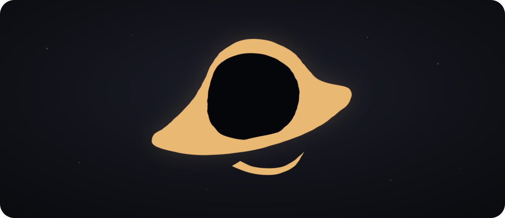

Make your desktop feel like yours.
Tonantzintla is a configurable Linux desktop shell for Niri and Quickshell. Arrange a useful bar, open tools when you need them, and give the whole desktop a bit more character.

WABI-SABI / TONANTZINTLA 1.1Pick the tools you need.
Keep the bar close for everyday controls. Open the larger tools when you need more room, then arrange everything to suit your workflow.
Aperture
Keep workspaces, media, time, tray items, and system readings in one bar.
Ephemeris
Open search, settings, audio, power, network, screenshots, and weather when you need them.
Resonance
Control your music, read lyrics, watch the spectrum, and shape the sound.
Parallax
Browse wallpapers and let the background change with the way you use the desktop.
Umbra
Lock, preview, and manage your session across every connected display.
Keep it clear. Make it move.
Keep the desktop easy to read, then let the surfaces move and respond so every change feels intentional.
Try it on your desktop.
Clone the project, check your setup, and start the shell. The doctor command will point out anything that needs fixing first.
$ git clone https://github.com/deltadasher/Tonantzintla.git $ cd Tonantzintla $ ./bin/blackhole doctor $ ./bin/blackhole install $ ~/.local/bin/blackhole run # arrange the desktop your way